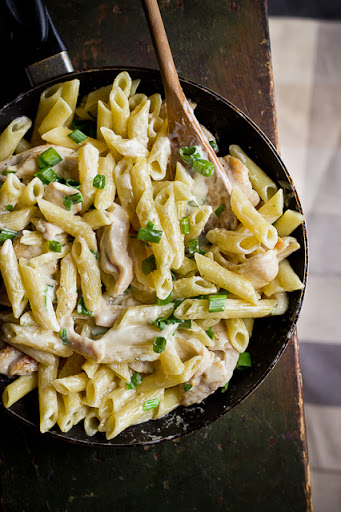

Koostisosad:
Maggie ürdisegu kanale 30g
Köögikoor/toidukoor 800ml
Valmistamine:
- Keeda pasta umbes 15-20 minutit.
- Lisad soola ja pisut õli oma maitse järgi.
- Tükelda filee ja prae pannil maksimaalselt 10 minutit.
- Kui filee on valmis lisa koore ja ürdisegu.
Copyright © 2021 Andreas Miil